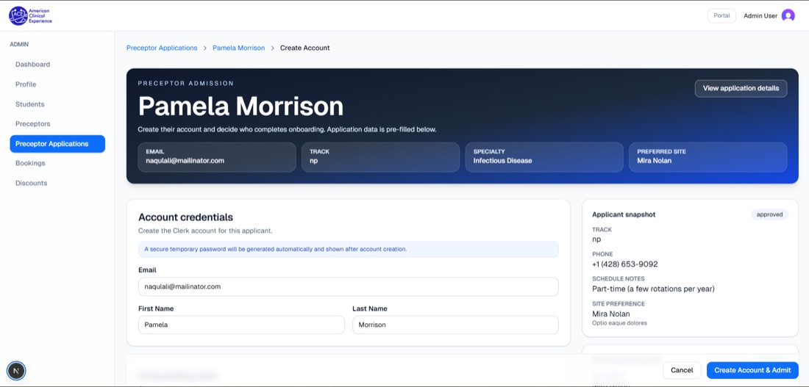
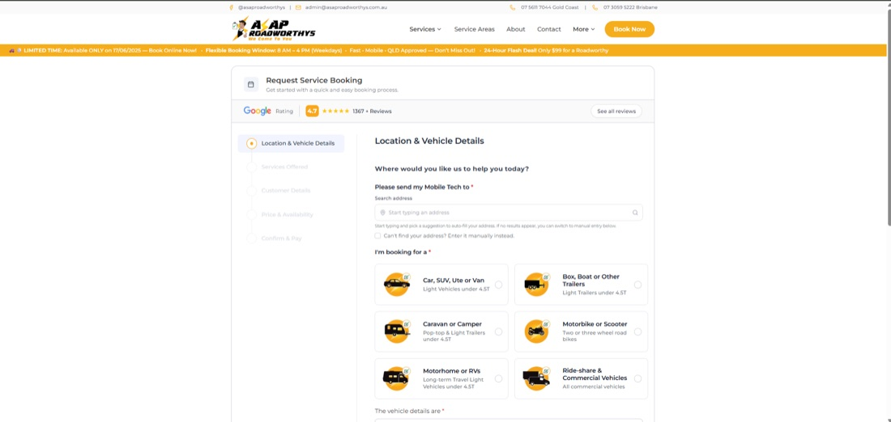
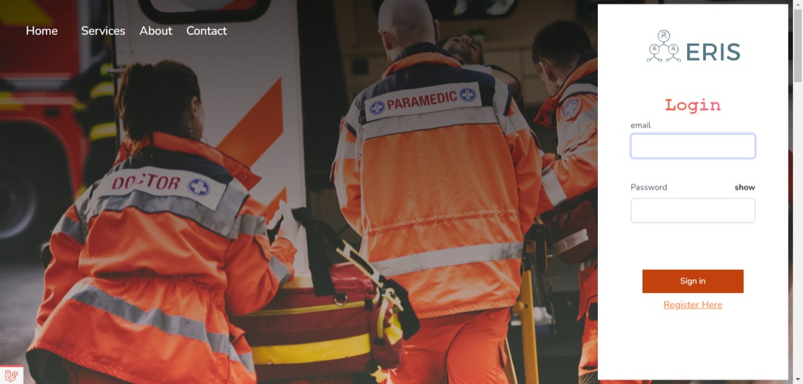
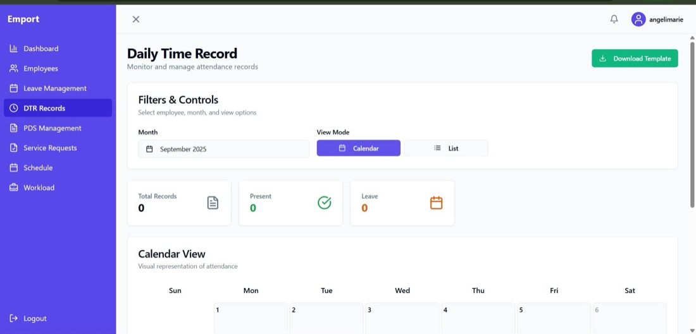
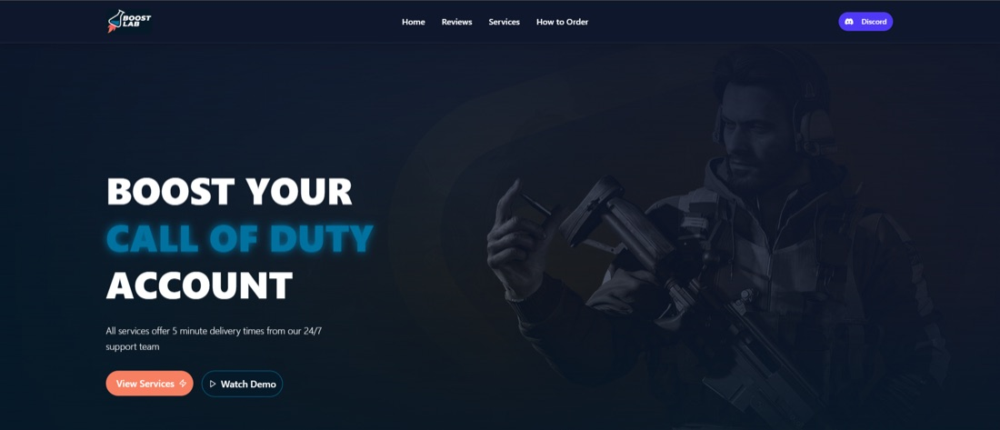
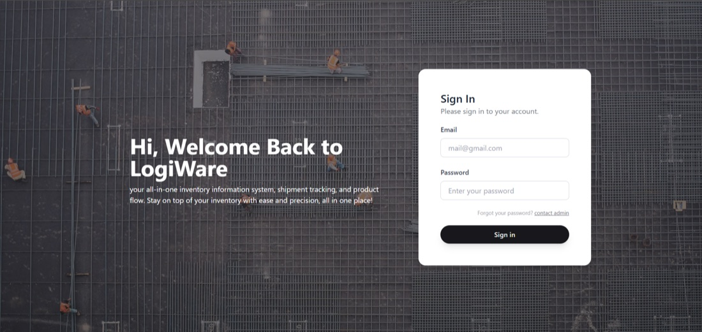

PORTFOLIO / SELECTED SYSTEMS / 2023 – 2026
Full-Stack Engineer — AI, SaaS & Automation
I build software that has to work beyond the demo. Statutory compliance reporting, geospatial data pipelines, retrieval-augmented AI, customer portals and business automation — owned from first requirement through to production support. Two years of enterprise QA sit underneath the development work, so testing and reliability are habits rather than afterthoughts.
CONTENTS
PROFILE
Most project failures happen at the boundary between disciplines — the frontend works but the API breaks, the API works but the automation fails, the automation works but the data is wrong. I work across all three so the boundaries hold.
01
Full-Stack Development
02
AI & Automation
03
QA & Reliability
| Languages | TypeScript, JavaScript, Python, PHP, C#, SQL |
| Frontend | React, Next.js, Vue, Inertia, Angular, Tailwind CSS |
| Backend | FastAPI, Node.js, Express, Laravel, ASP.NET Core |
| Databases | PostgreSQL, PostGIS, pgvector, MySQL, SQL Server, Supabase, Redis |
| Cloud & infra | AWS (ECS, RDS, S3, CloudFront), Docker, Terraform, CI/CD, Linux |
| AI & ML | OpenAI API, embeddings, vector search, RAG, structured outputs |
| Testing & QA | Pytest, Vitest, PHPUnit, Postman, regression, API, ERP validation |
| Automation | n8n, Celery, BullMQ, Prefect, Stripe, Shopify, ServiceM8, Pipedrive, PandaDoc |
| Geospatial | PostGIS, GeoServer, GeoNode, GeoAlchemy2, WMS/WFS |
| Available for | Remote — contract or full-time |
| Time zone | PHT (UTC+8), overlapping US and AU hours |
| Domains | Compliance reporting, geospatial, LegalTech, logistics, clinical, e-commerce |
FLAGSHIP 01 / GEOSPATIAL · STATUTORY REPORTING
Atlas Geotech LLC Contract · Feb 2026 – Nov 2026 Primary developer · determination & reporting pipeline
Every residential property sale in California legally requires a Natural Hazard Disclosure. Producing one means checking a parcel against dozens of state and federal hazard datasets — flood, fire severity, seismic, landslide, liquefaction, dam inundation, airport noise — and emitting a document in a statutorily prescribed format.
A slow report is an inconvenience. A wrong one is legal liability.
| Atlas SDI | PostGIS, GeoServer and GeoNode holding state and federal hazard layers. Prefect flows keep datasets current; a registry tracks currency and alerts on drift. |
| Geocoding svc | FastAPI service that resolves an address to a parcel and APN, runs the hazard determinations, and renders the result. Covers the full range of disclosure products, with a queue for asynchronous orders. |
| Portal admin | Order lifecycle, JWT issuance for the customer API, per-user report access limits, and email delivery. Polls the SDI for report status. |
| Portal / site | Next.js portal for address search, report selection, checkout and PDF delivery, plus the public marketing site on S3 + CloudFront with OIDC-authenticated deploys. |
| Backend | FastAPI async Python over PostGIS / GeoAlchemy2, SQLAlchemy 2.0, Celery queue for async report orders |
| Rendering | Server-rendered PDF templates; report map and details pages consumed by the customer portal |
| Infrastructure | Terraform-defined AWS — ECS Fargate, RDS, ALB, Secrets Manager, ECR — plus Prefect flows promoting datasets from on-prem NAS to AWS |
| Data sources | GeoServer WMS/WFS, FEMA NFHL with local-copy failover, FAA ADHP, CAL FIRE FHSZ, USGS 3DEP, libpostal via gRPC |
The full range of statutory disclosure products is in production — residential, commercial, tax, tenancy, fire severity and more. Report generation moved off the request path onto a queued pipeline with warmup caching; report content is locked down by automated checks so a formatting change cannot quietly alter a legally binding document; infrastructure is defined as code on AWS, with permissions tightened to least privilege after a security review.
FLAGSHIP 02 / SAAS · ORDER TO DELIVERY
Atlas Geotech LLC Contract · Feb 2026 – Nov 2026 Sole developer — architecture, build and QA
Escrow officers and agents ordering a hazard disclosure need to find one specific parcel — often from a partial address, sometimes with several APNs matching — then pick the right report type, and receive a PDF they can attach to a transaction.
Getting the wrong parcel means the wrong disclosure on a legally binding sale.
| Frontend | Next.js App Router with route groups, an AuthGuard app shell, Zustand stores, and a Tailwind component system built to Figma frames |
| Backend | Typed API client over the portal-admin JSON API and the Atlas SDI report endpoints |
| Infrastructure | Multi-stage Docker with Next.js standalone output, non-root user and a health endpoint; env-driven proxying to the SDI |
| Platform | JWT auth with refresh, per-user report access limits, auto-generated escrow numbering, email delivery |
The full order-to-delivery flow is in production, and the marketing site was rebuilt to Figma with the portal ported onto it.
FLAGSHIP 03 / AI · RETRIEVAL-AUGMENTED GENERATION
Personal project Solo build Architecture · AI pipeline · backend · data modeling · DevOps · security
Built to push production-grade RAG end to end. Users ask theological questions and receive scripture-grounded answers from a 14-stage pipeline: retrieve verses by pgvector similarity across 36,819 embeddings, enrich with Greek/Hebrew morphology, cross-references and historical context, then personalize using per-user memory and active prayer requests.
| Backend | FastAPI async Python, SQLAlchemy 2.0, Alembic, Pydantic v2 |
| Data | PostgreSQL with pgvector, Redis |
| AI | OpenAI GPT-4o / GPT-4o-mini / embeddings / moderation, structured outputs |
| Auth | Google OAuth, JWT with refresh-token rotation, TOTP 2FA, SlowAPI rate limiting |
| Ops | Docker Compose with seed runners, profiles and reset paths; APScheduler |
A production-shaped backend demonstrating applied RAG, domain-modeling depth and operational maturity — retrieval that degrades instead of failing, tiered model economics, and an admin surface with the controls a real deployment needs.
FLAGSHIP 04 / AUTOMATION · SIX PRODUCTION SYSTEMS
Contract · Jan 2026 – Oct 2026 Private / NDA React · Node.js · Express · TypeScript · Supabase · n8n · BullMQ · Docker
A self-help legal-document platform, built out as six internal production systems. The client, product and domain are covered by an active NDA, so they are not named here and no screenshots are shown — the engineering is described in full.
SYSTEM 01
Dynamic Document Generation Pipeline
Legal forms are complex — static templates break the moment data changes. Built a form-driven pipeline where users complete a SurveyJS questionnaire embedded in the storefront, with answers auto-saving as they go. On submission the data triggers an n8n workflow that merges it into a Word template, converts to PDF, and delivers it by email. Paired with an internal admin app — built on the SurveyJS form builder — where staff manage forms, templates and bundles without a developer, with all writes routed through a resource-style API rather than direct database access.
Zero manual document handling, and non-developers can ship new form types.
SYSTEM 02
Anti-Piracy Document Fingerprinting
Self-help legal documents are trivially resold once they leave your system. Built a two-part fingerprinting subsystem: a Node/Express/TypeScript microservice that stamps formatted footers into .docx files over a REST API (bold, italic, color, font, alignment), and a companion service that injects per-purchase identity — user ID, email, timestamp — into the generated PDF's metadata via pdf-lib. Both are called from the document pipeline, so every delivered file is uniquely traceable to the buyer.
Every delivered document carries an invisible, per-buyer fingerprint.
SYSTEM 03
Court-Record Lead Classification Engine
Daily public court-record exports arrive as zipped, caret-delimited flat files with separate lookup tables for party types, case types and judges. Built a Node/Express/TypeScript backend that parses the feed, filters to active family-law matters filed within 180 days, detects trigger events in the docket — service returned, motion to withdraw — and classifies each unrepresented party into one of four lead profiles with priority tiers: newly filed, recently served, dropped by counsel, or simply unrepresented. Leads are enriched with human-readable labels and batch-upserted behind a CRUD API.
A raw daily court feed becomes a prioritized, deduplicated lead queue with no manual triage.
FLAGSHIP 04 / CONTINUED
Systems 04 – 06 Private / NDA
SYSTEM 04
Multi-Party Dispute Scheduling System
Dispute negotiations require all three parties — creator, receiver and mediator — to agree on a meeting time. Built a scheduling system where a creator proposes a date, the receiver accepts or declines, and on agreement all three parties are notified automatically. Designed for legal dispute workflows where neutral coordination matters.
Three-party consent model with automated notifications on agreement.
SYSTEM 05
Containerized Scheduling Service
The scheduling workload outgrew a single process once reminders, confirmations and calendar sync all needed to survive restarts. Split it into an Express API and a separate BullMQ worker over Redis, with Postgres for state and migrations applied automatically on container start. The whole stack — API, worker, database, cache and Traefik reverse proxy — ships as a documented compose deployment with a written production runbook.
Background jobs survive restarts; the full stack deploys from one documented runbook.
SYSTEM 06
Mediator Rule Engine with Wear OS Integration
Mediators need to trigger timed actions during sessions — reminders, check-ins, delays — without interrupting the flow. Built a rule engine with three rule types: instant (fires immediately), delay (fires after a set timer) and cron (fires on a set schedule). Rules are configured in a frontend dashboard, mapped to named buttons, and surfaced on a Wear OS watch so the mediator can fire any rule with a single button press. Also includes a voice command system for natural-language scheduling.
Frontend rule configuration, then one-tap execution from a watch during live sessions.
WHY IT'S PRESENTED THIS WAY
This engagement is under an active NDA. The client, product, domain, hosting provider and the jurisdiction whose court records feed the lead pipeline are all deliberately omitted, and no screenshots are included. Architecture, stack and engineering decisions are described in full, which is what the work is actually evidence of. Happy to talk through any of it in an interview.
SELECTED CLIENT PROJECTS / 01 – 02
FULL-STACK · ACE
Contract · Oct 2025 – Jan 2026 Architecture, full-stack build, integrations, deployment, QA

Placement coordinators managed bookings, student profiles and document packs across Pipedrive, email threads and spreadsheets. Any status update required manual reconciliation across all three.
NEXT.JS · TYPESCRIPT · TAILWIND · LARAVEL · CLERK · MAPBOX · PANDADOC · PIPEDRIVE · VERCEL
CRM-synced booking platform with location search, automated onboarding, and document packs triggered on placement milestones.
Onboarding is templated, bookings stay in sync with CRM records, and coordinators see placement status without manual reconciliation.
FULL-STACK · ASAP ROADWORTHYS
Contract · Sep 2025 – Nov 2025 Frontend and backend pairing with QA on every release

Inspections required payments, job creation and customer messaging to stay in sync across three separate systems. A failure in any one broke the entire flow.
REACT · NODE.JS · EXPRESS · TYPESCRIPT · STRIPE · SERVICEM8 · BREVO
Booking-to-inspection pipeline integrating payments, job creation and lifecycle comms in one reliable flow.
Bookings reliably trigger payments, job templates and lifecycle emails — cutting manual cleanup and eliminating sync failures.
SELECTED CLIENT PROJECTS / 03 – 04
OPERATIONS · EMERGENCY RESPONSE
Client project · case study Full-stack delivery

Resource state had to stay consistent across reservations, dispatch and returns, while preserving an accountable history of movement between municipalities.
LARAVEL · INERTIA · VUE · MYSQL · RBAC · BACKUPS · REPORTING
Real-time resource management for responders — dispatch dashboards, movement audit trails and role-based access across municipalities.
Availability is visible across municipalities, resource lifecycle stays traceable, and state transitions remain reviewable for reporting.
OPERATIONS · EMPORT
Contract · Jan 2025 – Apr 2025 Product architecture, full-stack build, QA, deployment

Schools were managing attendance, payroll and leave approvals across scattered spreadsheets shared between HR and finance — reconciliation was manual and error-prone.
LARAVEL · REACT · MYSQL
Unified HR platform linking attendance, payroll and leave workflows with role-based access and audit exports.
Attendance, leave and payroll stay aligned with approvals and exports — removing manual reconciliation between HR and finance.
SELECTED CLIENT PROJECTS / 05 – 06
E-COMMERCE · BOOSTLAB
Contract · Jun 2025 – Aug 2025 Frontend build, integrations, QA, deployment

The team needed a storefront where payments, order syncing and analytics matched the designed experience exactly — no gaps between design and production.
REACT · TYPESCRIPT · SHOPIFY · CHECKOUT.COM · META PIXEL
Conversion-focused storefront with a Shopify backend, Checkout.com payments and Meta Pixel on key funnel steps.
A smooth checkout, orders syncing cleanly to Shopify, and accurate attribution — reducing cart drop-offs and support load.
OPERATIONS · LOGIWARE
Freelance Frontend and backend delivery with QA and deployment

Logistics teams were reconciling stock levels and shipment status across multiple trackers — no single source of truth meant slow fulfillment decisions.
ASP.NET · ANGULAR · SQL SERVER
Centralized inventory and shipment management with movement history, fulfillment dashboards and staged rollouts.
Teams see inventory and shipment status in one place — reducing manual reconciliation and enabling faster fulfillment decisions.
TRACK RECORD
Long-term roles and project clients, labeled as what they are.
One of the core engineers on the platform behind California's statutory hazard disclosures, and front-end lead on the hazard analysis application. Built the PDF report engine and an async report queue, parcel-level hazard determination in PostGIS, the customer portal at atlasnhd.com, and the first Terraform stack on AWS. About 1,500 commits across five repositories.
Sole engineer on a self-hosted legal-document automation platform: a generate, stamp, convert, sign and notify pipeline on n8n, a self-hosted e-signature service replacing a paid SaaS, small Node/TypeScript services, and the container infrastructure behind 10+ apps.
Enterprise QA across server/OS, terminal-based applications, database links, drivers and user access provisioning for business-critical ERP systems. Developed and maintained automated test scripts, raising regression coverage and cutting manual verification effort each release cycle.
Clinical placement booking platform connecting students and preceptors — Mapbox location search, Clerk authentication, PandaDoc document packs and Pipedrive CRM sync.
Booking backend for a vehicle inspection service, syncing jobs and customer records with ServiceM8 and sending automated emails through Brevo. Designed the payment and booking flow so customers were never double-charged or double-booked when a request was retried.
Conversion-focused storefront with Shopify checkout, Checkout.com payments and Meta Pixel tracking on key funnel steps.
Maintained the academy's ASP.NET MVC learning management system; reviewed student submissions and mentored learners through technical troubleshooting.
Employee management platform for academic institutions — attendance tracking, workload scheduling, leave approval workflow and automated reporting.
Booking systems, POS modules and reservation platforms for small and mid-sized businesses across ASP.NET MVC, Laravel, React, Vue and Inertia — requirements through deployment and production support.
Set up and maintained physical servers and system software; handled networking tasks and server issue resolution.
BSc Information Technology
Mindanao State University, Naawan — major in Database Systems
AUG 2018 – JUL 2023
Process Data Analyst — SAP Signavio (Certified Associate)
Process mining, SiGNAL, SAP Signavio Process Insights & Intelligence
SEP 2025 – SEP 2026
WORKING TOGETHER
Everything in this portfolio was built end to end — requirements, architecture, implementation, QA, deployment and the support afterwards. If your team needs someone who can hold a system together across the frontend, the API, the data and the automation, I'd like to hear about it.
FURTHER READING
Full case studies with interactive system diagrams — Atlas NHD, ReadMindMe, ERIS and ACE — are at ikoy.vercel.app/work. A separate ATS-formatted CV is available on request or at ikoy.vercel.app/Miko-Canares-CV.pdf.